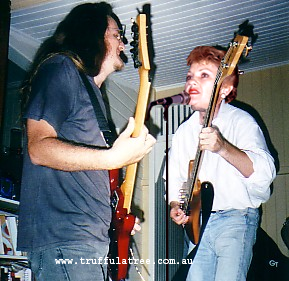
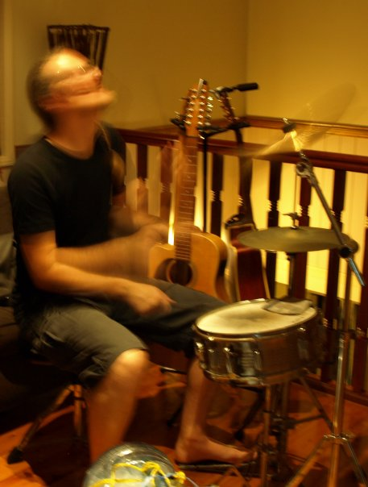

Music
You are here: Home > MusicSelect a link on the left to continue navigating.
One of the things that makes me happiest in this world is escaping into music for a while. Jamming with your mates is an excellent way to pass away a sunday arvo, and it can even result in some amusing recordings.
Under this page you'll find some of the things and bands I've collaborated on and played with over the years.

|  |
(By the way - the first image above used to be high on the google image search results list for "Pauline Hanson". They seem to have wisened up now though. :). I still think that's quite an achievement!)